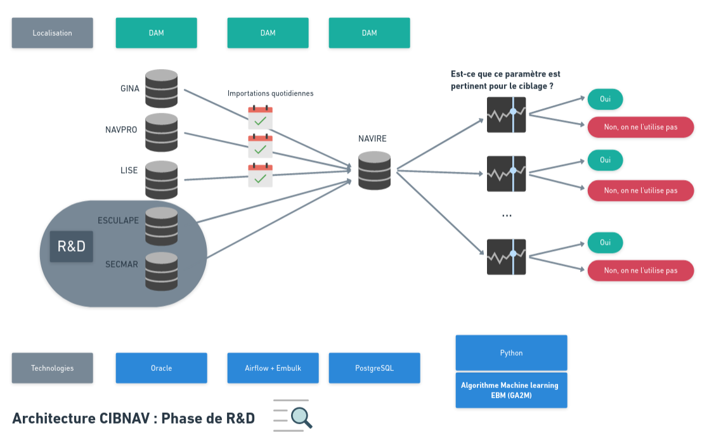
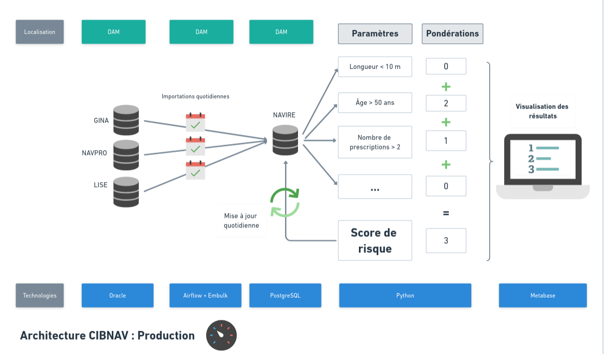

# Cadrage du projet CibNav
Par Quentin Loridant
CibNav est un moteur de règles permettant d'attribuer un score de risque à chaque navire professionnel. Le but est d'optimiser les contrôles en ciblant les navire en fonction de ce score.
# Liste des données utilisées
Dans le moteur de règles, nous utilisons les paramètres ci-dessous :
| Nom | Source | Personnes ayants accès aux données | Utilisateurs finaux |
|---|---|---|---|
| Numéro d'immatriculation française | NAVPRO | DAM Administration Centrale (AC) ; DAM Inspecteurs | DAM Inspecteurs |
| Longueur Hors-Tout | NAVPRO | DAM AC ; DAM Inspecteurs | DAM Inspecteurs |
| Année Construction | NAVPRO | DAM AC ; DAM Inspecteurs | DAM Inspecteurs |
| Somme des prescriptions sur contrôles majeurs sur les 3 dernières visites de sécurité | GINA | DAM AC ; DAM Inspecteurs | DAM Inspecteurs |
| Somme des prescriptions sur contrôles sur les 3 dernières visites de sécurité | GINA | DAM AC ; DAM Inspecteurs | DAM Inspecteurs |
| Taux de turn-over de l'équipage | LISE | DAM AC ; DAM Inspecteurs | DAM Inspecteurs |
| Nombre de mutation de propriétés | LISE? | DAM AC ; DAM Inspecteurs | DAM Inspecteurs |
Pour s'assurer que ces paramètres soient pertinents nous avons étudié la correlation statistique entre les données ci-dessus et l'accidentologie maritime. Pour faire cela, nous avons utilisé les données ci-dessous :
| Nom | Source | Personnes ayants accès |
|---|---|---|
| Nombre de SITREP associés à ce navire | SECMAR | DAM AC |
| Nombre d'accidents de travail déclarés à bord du navire | Esculape | DAM AC |
Important : Ces deux dernières données sont seulement utilisées pour comprendre l'accidentologie. Elles ne sont plus utilisées ensuite et n'influencent pas directement la note d'un navire. Ainsi, seules les personnes en administration centrale (AC) en charge du projet CibNav y ont accès.
CibNav va donc permettre de créer pour chaque navire :
| Nom | Source | Personnes ayants accès | Utilisateurs finaux |
|---|---|---|---|
| Score de risque | CIBNAV | DAM AC DAM Inspecteurs | DAM Inspecteurs |
# Finalité
CibNav permet deux choses aux inspecteurs de sécurité :
- Un accès facilité à de l'information sur le navire. L'inspecteur a déjà accès à ces informations via plusieurs applications des affaires maritimes (NAVPRO, LISE, NAVPRO), elles sont ici regroupées.
- Le calcul d'un score de risque pour chaque navire.
Ces deux éléments sont des outils d'aide à la décision pour l'inspecteur au moment de préparer un contrôle. Ils vont pouvoir l'aider à cibler les navires qu'il juge pertinent au regard du risque en matière de sécurité maritime.
Lors du contrôle, en cas d'infraction, l'inspecteur aura la possibilité ..... finalité de ces contrôles ?
# Schémas d'architecture
Pour la R&D : 
En production : 
# Démonstration de l'outil
Voici un exemple de liste que les inspecteurs auront à disposition.

En cliquant sur un navire particulier, les inspecteurs peuvent accèder à plus d'informations :

# Mesures de sécurité technique
- Les données sont hebergées dans les mêmes conditions que les autres données de la DAM, par le SI de la DAM.
- L'accès aux données (authentification et autorisation) sera géré par l'accès Cerbère
- L'application fera l'objet d'un audit de sécurité, comme les applications de la DAM